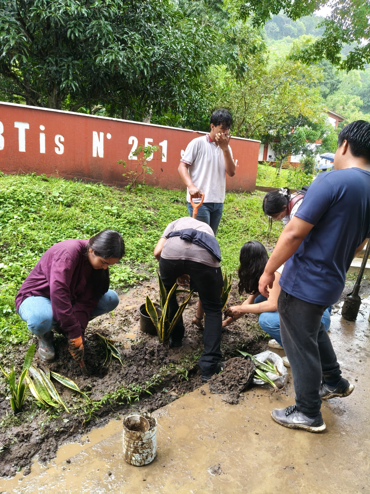
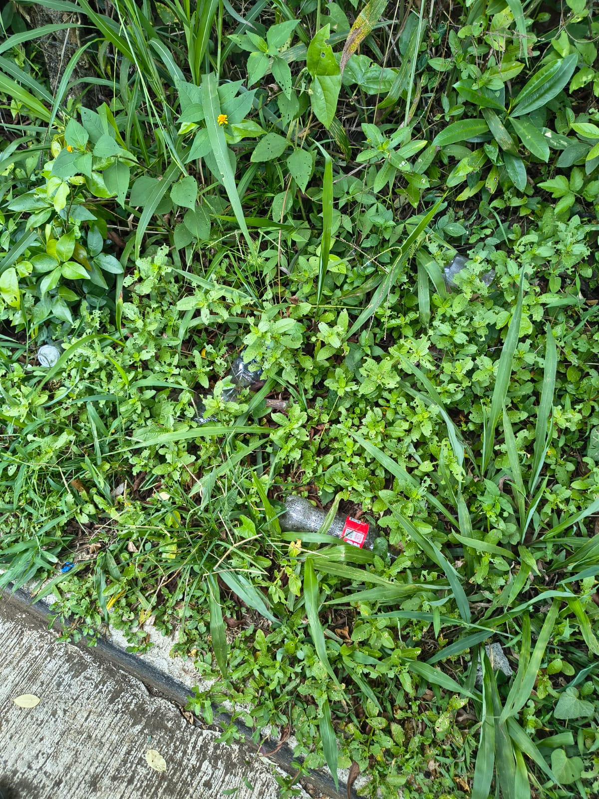
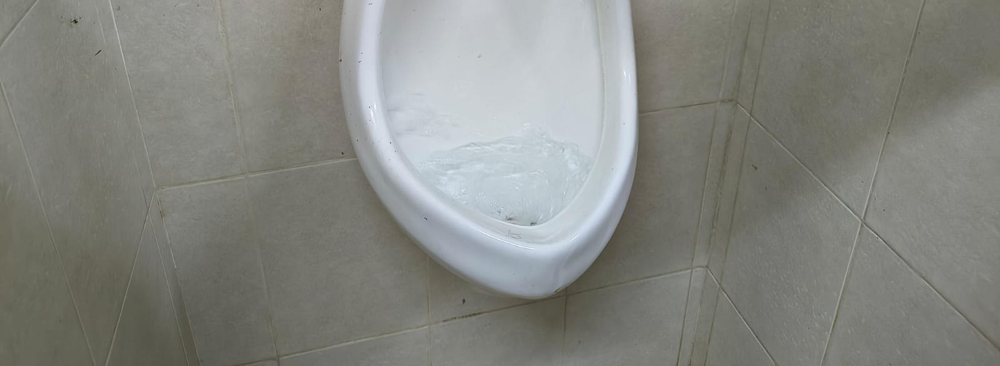
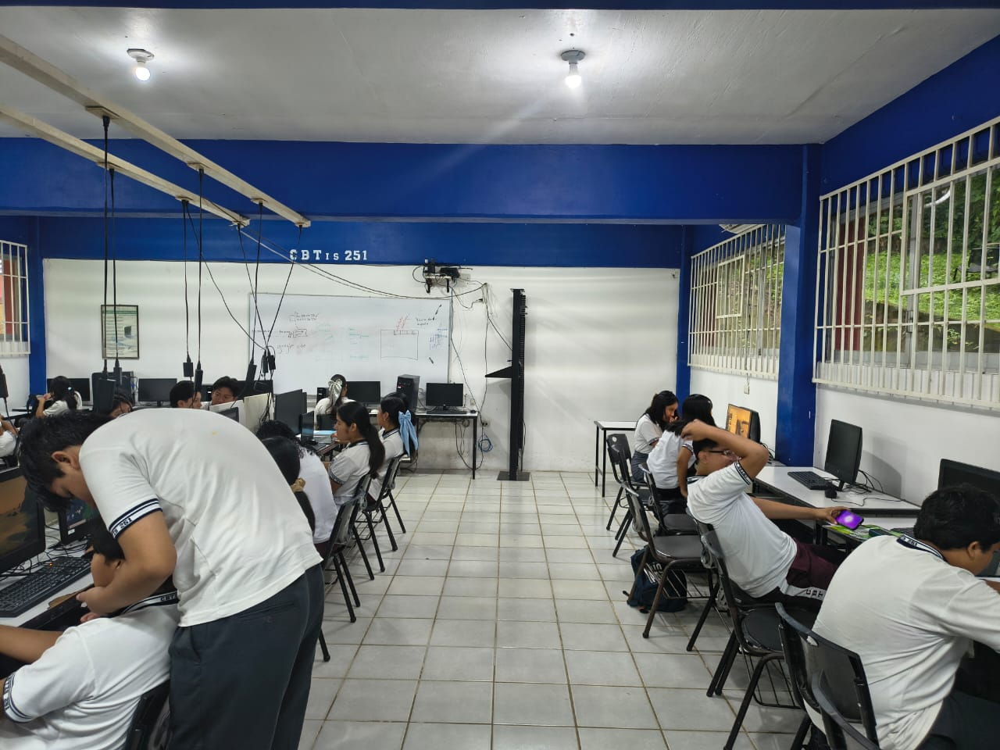
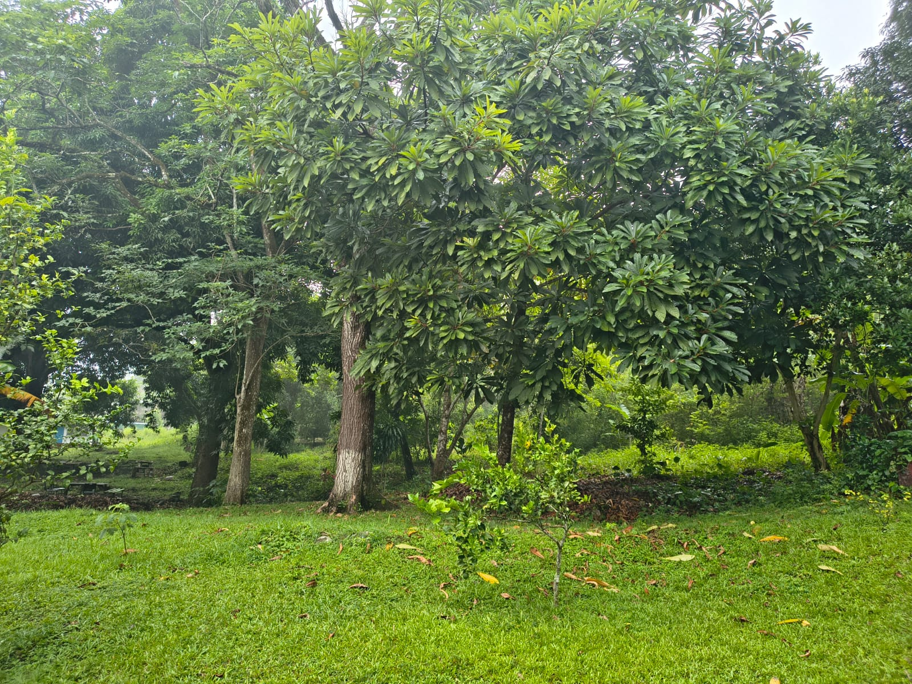

Contaminación Ambiental en CBTIS 251
CBTIS 251 es una institución educativa importante en nuestra comunidad. Sin embargo, como muchas instituciones, enfrenta desafíos ambientales significativos que afectan a estudiantes, maestros y el entorno.
Es momento de que TODOS en CBTIS 251 actuemos para mejorar nuestro ambiente.

En la institución generamos una gran cantidad de residuos diariamente. Muchos estudiantes no separan basura orgánica, inorgánica y reciclable. Esto termina en rellenos sanitarios contaminando el suelo.

Los sanitarios, fuentes de agua y áreas de limpieza malgastan agua constantemente. Un grifo goteando o un sanitario roto puede desperdiciar miles de litros al año.

Las luces, aires acondicionados y dispositivos electrónicos funcionan sin control. Muchas aulas permanecen iluminadas innecesariamente contribuyendo a mayores emisiones de carbono.

CBTIS 251 tiene pocas plantas y árboles. Los espacios verdes ayudan a purificar el aire, reducir la temperatura y mejorar la salud mental de estudiantes y maestros.

Este video te muestra cómo la contaminación ambiental afecta nuestras escuelas, comunidades y planeta. Aprenderás acciones simples que puedes hacer ahora.
Duración: 5 minutos | Tema: Contaminación ambiental en instituciones educativas
Aprende la importancia de clasificar residuos y cómo hacerlo correctamente en CBTIS 251.
Te presentamos acciones específicas que mejorarán el ambiente de nuestra institución:
Al implementar estas propuestas:
El cuidado del ambiente es responsabilidad de TODOS. Aquí te mostramos cómo puedes ser parte del cambio:
Yo me comprometo a:
¡Juntos podemos hacer que CBTIS 251 sea una institución verde y sostenible! 🌍💚
La contaminación ambiental en CBTIS 251 es un problema real que afecta a toda nuestra comunidad educativa. Sin embargo, esto también es una oportunidad para actuar juntos.
Cada pequeña acción cuenta: reciclar un papel, ahorrar agua, apagar una luz. Si todos en CBTIS 251 hacemos nuestra parte, lograremos una institución más limpia, verde y sostenible.
La educación ambiental no es solo teoría en libros. Es vivir cada día siendo conscientes de nuestras acciones y su impacto en el planeta. Como estudiantes de CBTIS 251, tenemos el poder de cambiar las cosas.
Desde hoy, comprometámonos a cuidar CBTIS 251 y nuestro planeta. Porque no hay planeta B, y la única institución que tenemos es CBTIS 251.
Hecho por: Roberto de Jesus Aguirre Adauta y Dayret Joan Castañeda Veela
¡El cambio empieza en CBTIS 251, empieza contigo! 🌱🌍💪